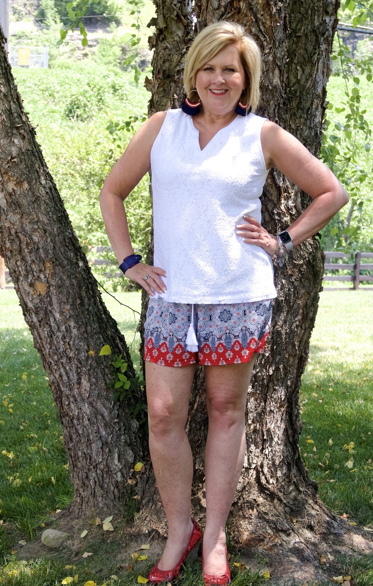

Mostrando 13 de 37,542 comentarios

Meredith Rojas
¡MIREN ESTO! Soy de Rio Maior, Portugal, 10 días usando la receta y mi panza DESAPARECIÓ. Mi
esposo no puede creer que sea la misma mujer. Si no ven el video AHORA se van a arrepentir toda
la vida
Me gusta
Responder
hace 3 min
32
Sofia Martínez
¡Wow! Yo también lo probé y en solo una semana ya noté la diferencia. Es increíble cómo funciona
tan rápido
Me gusta
Responder
hace 2 min
8
María Fernanda López
Sinceramente pensé que era uno de esos videos largos y aburridos que no dicen nada... Pero menos
mal que me quedé hasta el final, porque ahí dieron la receta completa del truco de la gelatina
coreana. ¡Ya la estoy haciendo y bajé 12 kilos en solo 28 días! Gracias Dr por compartir algo
tan simple, natural y que de verdad funciona.
Me gusta
Responder
hace 5 min
21

Laura Sánchez
María, ¿dónde compraste los ingredientes? Yo quiero empezar ya
Me gusta
Responder
hace 4 min
5
Renata Delgado
Perdí 9 kilos en un mes y lo mejor es que mi piel no quedó colgando. Mi hermana se gastó una
fortuna en lipo y yo solo compré 4 ingredientes en el mercado
Me gusta
Responder
hace 7 min
18
Paula Hernández
Mi cuñada me pasó el video hace 2 meses y hoy peso 14kg menos. Ojalá no hubiera dudado tanto
tiempo antes de verlo
Me gusta
Responder
hace 6 min
15
Patricia Gómez

Al principio era escéptica, pero después de probarlo estoy encantada. He estado usando este
truco de gelatina por poco más de 3 semanas y ¡mis pantalones ya se me caen!
Me gusta
Responder
hace 24 min
45

Carmen Ruiz
Patricia, ¡qué increíble! Yo también empecé hace 2 semanas. ¿Cuántas veces al día tomas?
Me gusta
Responder
hace 23 min
12
Patricia Gómez
Carmen, yo tomo una vez en la mañana antes del desayuno. Es súper fácil y rápido de preparar
Me gusta
Responder
hace 22 min
7
Daniela Méndez
Lo que más miedo me daba era quedar con piel flácida, pero bajé 11kg y mi piel está perfecta.
Hasta mi cara se ve más joven
Me gusta
Responder
hace 13 min
28
Ana Torres
Ese era mi miedo también! Pero funciona perfecto, la piel queda firme
Me gusta
Responder
hace 12 min
6
Jessica Brown
No puedo creer los resultados. En solo 25 días perdí 8 kilos y lo mejor es que no pasé hambre ni
tuve que hacer ejercicio extremo. Mi ropa favorita ahora me queda grande, tuve que comprar
tallas más pequeñas
Me gusta
Responder
hace 5 min
15

Marina Vega
Increíble Jessica! Las fotos hablan por sí solas. Yo empecé ayer, espero tener resultados así de
buenos.
Me gusta
Responder
hace 53 min
9
Roxana Matías
Me da rabia no haber conocido esto antes. Es tan simple y funciona tan rápido que no entiendo
cómo no es más conocido
Me gusta
Responder
hace 11 min
22
Natalia Herrera
Pensé que era una estafa más pero ya bajé 6 kilos. A mis 47 años volví a ponerme bikini después
de años
Me gusta
Responder
hace 17 min
19
Carla Navarro
La primera semana no lo creía, la segunda mi ropa empezó a quedar floja, y ahora llevo 7kg
menos. Es impresionante
Me gusta
Responder
hace 15 min
26
Isabela Ramírez
Pasé de talla 44 a 40 en solo un mes. Mis amigas no paran de preguntarme qué hice
Me gusta
Responder
hace 18 min
31
Juliana Rivera
Después de años de dietas que no funcionan, en 10 días bajé 5kg y mi piel quedó firme. Por fin
algo que sí sirve
Me gusta
Responder
hace 22 min
24
Antonella Suárez
Casi no lo pruebo por desconfiada pero qué bueno que lo hice. 6 kilos menos y sin piel colgando,
tal como promete
Me gusta
Responder
hace 2 h
12